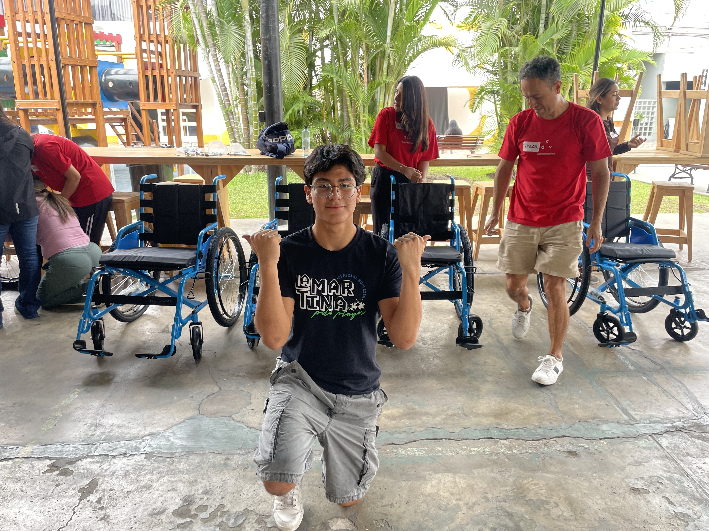
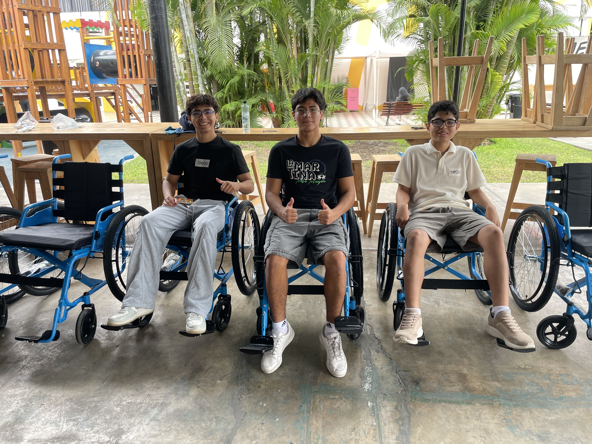
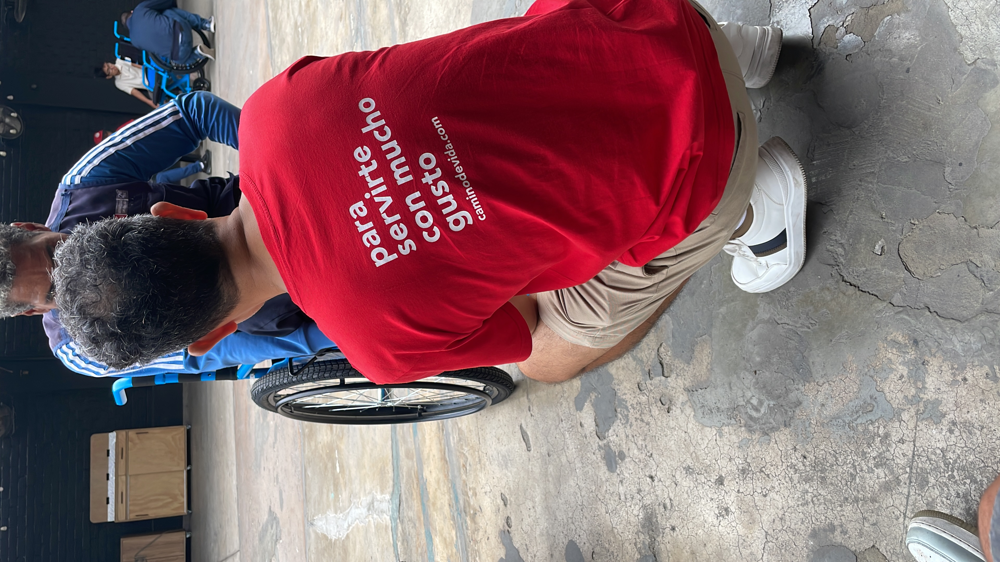
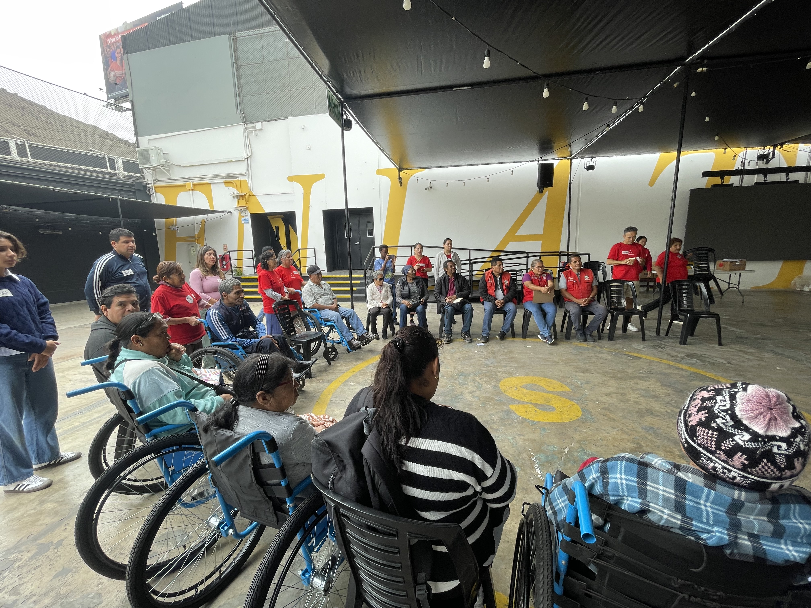

Experiencia 2
Voluntariado: Armando y Entregando Sillas de Ruedas
Distribucion CAS
Descripcion
Para esta experiencia CAS participe como voluntario en una jornada de armado y entrega de sillas de ruedas para personas con discapacidad, organizada en una iglesia. La actividad se llevo a cabo junto con un grupo de voluntarios mayores que ya tenian experiencia haciendo este tipo de trabajo, ademas de varios companeros del colegio.
Mi rol consistio en dos partes claramente diferenciadas: primero armar las sillas (montar las ruedas, ajustar los tornillos, colocar los reposapies, los apoyabrazos y los respaldos), y despues participar en la entrega directa a las personas que las necesitaban. Esta segunda parte fue la mas significativa porque pudimos sentarnos en un circulo con los beneficiarios, escuchar sus historias y compartir un momento de reflexion sobre la fe y la vida.
Indagacion
Antes de ir a la jornada me informe sobre el contexto del voluntariado. La iglesia trabajaba con la fundacion Camino de Vida, que importa sillas de ruedas desde el exterior y las entrega gratuitamente a personas en situacion de vulnerabilidad que no pueden costearlas por su cuenta.
Tambien investigue un poco sobre como armar correctamente las sillas: vi unos videos cortos para entender que piezas tiene una silla estandar, cuales son los puntos de ajuste mas importantes y por que es tan critico que todo quede bien apretado (es literalmente la movilidad y la seguridad de una persona). Aprendi que una silla mal armada puede causar caidas o lesiones, asi que la responsabilidad era grande.
Preparacion
La preparacion incluyo coordinar el transporte hasta la iglesia, llegar puntuales para no atrasar la jornada y vestirnos con ropa comoda (zapatillas cerradas y polo) porque ibamos a estar agachados moviendo piezas durante varias horas. Los organizadores nos entregaron una camiseta roja con la frase "Para servirte con mucho gusto", que se convirtio en el uniforme de la jornada y marcaba que eramos voluntarios.
Tambien nos dieron una pequena induccion al llegar: nos explicaron el orden del armado, cuales eran las herramientas disponibles, como verificar que las ruedas estuvieran firmes y como recibir respetuosamente a las personas beneficiarias cuando llegaran. Esa charla previa me ayudo a entrar a la actividad con seguridad y sin sentirme perdido.
Accion
La primera parte de la jornada fue puramente armado. Las sillas venian desarmadas dentro de cajas grandes de carton. Nos organizamos por estaciones: unos sacaban las piezas, otros montaban el marco, otros ponian las ruedas grandes traseras y las pequenas delanteras, y otros se encargaban de los detalles finales (frenos, reposapies, apoyabrazos). Yo trabaje en montaje de marco y ruedas. Tuve que aprender a ajustar tornillos con la fuerza justa, porque si quedaban flojos la silla se tambaleaba y si los apretaba demasiado podia trozar la rosca.
Despues de armar varias sillas, las probamos sentandonos en ellas para revisar que rodaran bien, que los frenos respondieran y que estuvieran completamente seguras. Esta prueba fue clave porque encontramos pequenos detalles para corregir antes de entregarlas.
La segunda parte fue la entrega. Llegaron las personas beneficiarias acompanadas de sus familias. Nos sentamos todos en un gran circulo y cada una de las personas con discapacidad nos conto su historia: como quedaron en silla de ruedas (algunos por accidentes, otros por enfermedades, otros de nacimiento), como fue el proceso de adaptarse, y como encontraron en su fe en Dios un apoyo para no rendirse. Despues les entregamos formalmente las sillas. Ver la cara de la persona cuando se sento por primera vez en su nueva silla fue un momento que no voy a olvidar.
Reflexion
Que aprendi? Aprendi cosas practicas, como armar una silla de ruedas paso a paso y trabajar coordinado en una linea de produccion improvisada. Pero lo mas importante que aprendi fue de las historias de los beneficiarios. Ellos hablaron sin amargura, con mucha paz y esperanza, a pesar de las situaciones tan duras que habian vivido. Eso me hizo darme cuenta de que la felicidad no depende de las circunstancias externas sino de la actitud que uno elige tener frente a ellas.
Como me senti? Al inicio me senti nervioso e incluso un poco incomodo, porque no sabia como tratar a las personas que iban a recibir las sillas (tenia miedo de decir algo torpe o de ser condescendiente). Pero cuando empezamos a conversar todo fluyo con naturalidad: ellos no querian lastima, querian que los escucharamos como personas. Al final de la jornada me senti agradecido, tranquilo y con una mezcla de alegria por haber ayudado y de reflexion profunda por todo lo que escuche.
Que desafios enfrente? El desafio fisico fue real: pasamos varias horas agachados, levantando piezas pesadas y armando sillas, asi que termine cansado y con la espalda adolorida. Pero el desafio mas grande fue el emocional. Escuchar como una persona quedo paraplejica por un accidente, o como una madre cuenta lo dificil que es mover a su hijo sin una silla adecuada, te golpea. Tuve que aprender a estar presente y a no desviar la mirada, a escuchar de verdad sin sentir pena, sino respeto.
Como contribuyo a mi crecimiento? Esta experiencia me cambio la forma de ver el mundo. Antes pensaba mucho en cosas pequenas que me molestaban del dia a dia (un examen mal, una discusion tonta, no tener algo que queria) y despues de esta jornada todo eso se relativiza. Aprendi a valorar lo que tengo: poder caminar, poder estudiar, tener salud, tener una familia que me apoya. Tambien me ayudo a entender que el servicio no es darle algo al otro desde una posicion superior, sino encontrarse con el otro como iguales. Las personas con discapacidad me ensenaron a mi mucho mas de lo que yo les pude ayudar a ellas.
Video
El circulo de testimonios: escuchando sus historias
Fotos del Proceso

Con las sillas terminadas y listas para ser entregadas

Probando una de las primeras sillas que termine de armar

Con los companeros probando las sillas antes de la entrega

"Para servirte con mucho gusto" — el polo que nos dio la fundacion

El momento mas importante: escuchando sus historias

Compartiendo el espacio con los beneficiarios y sus familias